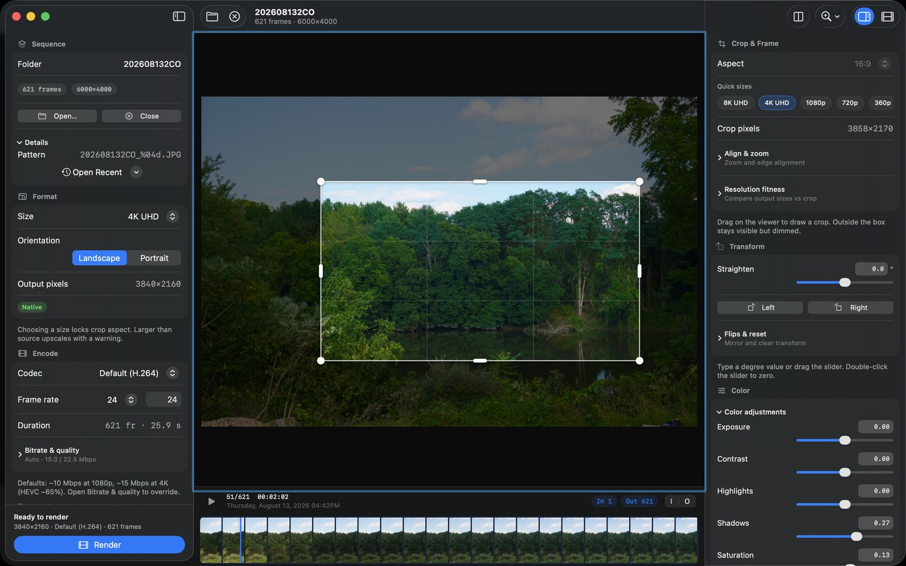
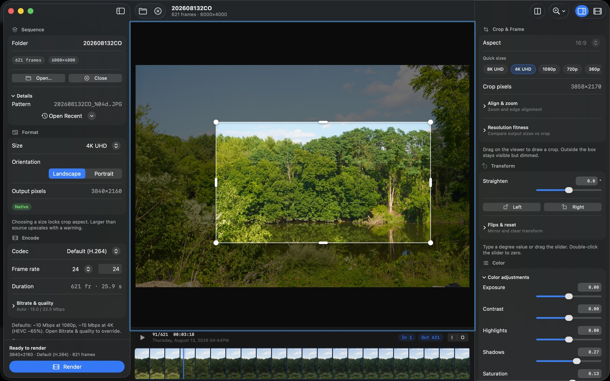

Mac user guide
This guide covers the native SwiftUI app — preview timeline, interactive crop & color, and AVFoundation export. For the older Python GUI, batch-of-folders workflow, and CLI, see the classic guide.

Install
- Download the latest native macOS build from GitHub Releases.
- Unzip and drag SISR.app into Applications.
- Open SISR. On first launch macOS may ask you to confirm the app (Gatekeeper). Use System Settings → Privacy & Security if needed.
Sandbox note: the app asks for folder access when you open a sequence or choose an output location. Grant access to the folders that hold your photos and where you want renders to land.
Open a sequence
Use Open… in the left sidebar (or File → Open).
Choose a folder that contains a numbered image sequence, for
example Shoot_0001.JPG, Shoot_0002.JPG, …
- Common extensions: JPG, JPEG, PNG, TIFF, and others Core Image can read.
- The pattern and frame count appear under Details after a successful scan.
- Open Recent lists folders you have opened before (via security bookmarks).
- Close clears the current project from the window.
Unlike the Python app, this native build opens one sequence folder at a time (not a parent folder of many sequences).
Viewer, playback, and in/out
- Play / pause from the transport under the viewer.
- Scrub with the filmstrip; the playhead shows the current frame.
- Set In and Out to trim which frames are rendered. Duration updates from frame count ÷ frame rate.
- Capture date/time for the current frame appears when metadata is available — useful before enabling a date overlay.
Format & orientation
In the left Format section, pick an output size (for example 4K UHD or 1080p) and Landscape or Portrait. Output pixel dimensions update immediately; a Native badge appears when the crop can cover the target without upscaling beyond your source.
Choosing a size locks the crop aspect to match. For how Keep top / Center / Keep bottom relate to 3:2 stills, see Crops & framing.
Crop & transform
In the right inspector under Crop & Frame:
- Drag the white crop rectangle and its handles in the viewer.
- Use Quick sizes (8K, 4K, 1080p, …) to jump presets.
- Straighten — drag the slider or type degrees. Double-click the slider to zero.
- Rotate Left / Right in 90° steps.
- Expand Align & zoom, Resolution fitness, and Flips & reset only when you need those controls.
Color & detail
All color tools live under one Color adjustments disclosure. Expand it to tune exposure, contrast, highlights, shadows, and saturation — each with a slider and a numeric field.
Sharpen, noise reduction, and vignette stay in a separate collapsed group so they stay out of the way until you need them.

Encode, bitrate, and quality
- Codec — Default (H.264) for everyday MP4; other options (such as ProRes / GIF) appear in the menu when available.
- Frame rate — type or step the fps; duration updates.
- Bitrate & quality — collapsed by default. The summary shows auto targets (for example Mbps for 1080p / 4K). Expand to override average or quality-oriented settings when you need Instagram-friendly or archive bitrates.
Higher bitrates improve quality but increase file size and encode memory. Auto values are chosen to look good at common resolutions without overfilling RAM on long sequences.
Deflicker
In the Timelapse section, enable Deflicker to smooth brightness across the in/out range before encoding. Analysis runs with a progress indicator so long sequences do not look stuck at 0%.
Render
- Confirm size, orientation, codec, and in/out.
- Click Render and choose where to save the file if prompted.
- Watch the progress card. You can cancel an in-flight render from the UI.
If a file already exists at the destination, the app prefers a safe unique name (or overwrite when sandbox permissions allow).
Settings & projects
- App settings cover defaults such as recent folders and UI preferences.
- Security-scoped bookmarks remember folders you have authorized so reopening a sequence does not always require the Open panel.
Build from source
Developers can open macos/SISR.xcodeproj or follow
macos/README.md. Shared rendering logic lives in the SISRKit Swift package.